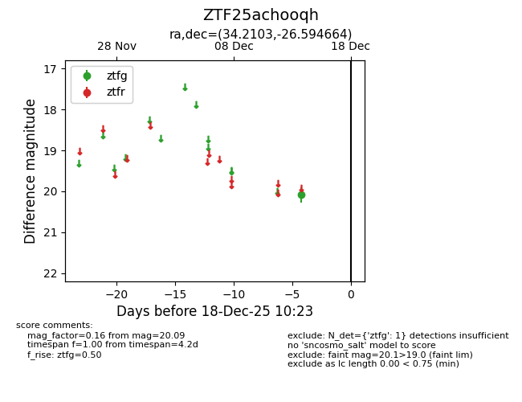
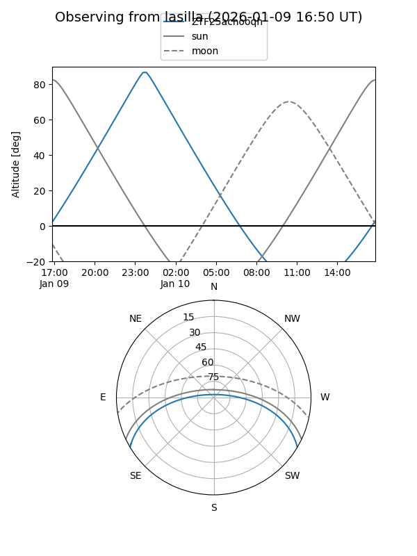
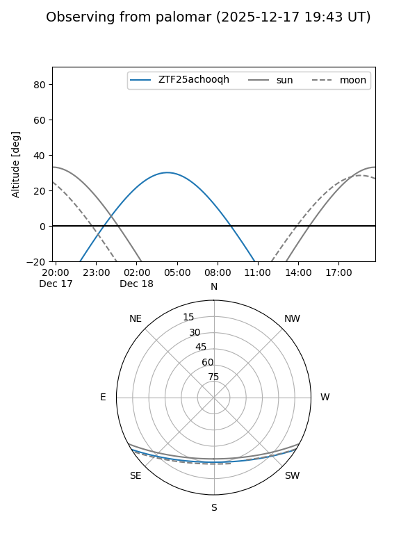

ZTF25achooqh
Target ZTF25achooqh at 2025-12-31 18:00
Aliases and brokers:
FINK: link
Lasair: link
ALeRCE: link
alt names
ZTF25achooqh (ztf,fink_ztf)
Coordinates:
equatorial (ra, dec) = 34.2103,-26.59466
equatorial (HMS+DMS) = 02:16:50.48,-26:35:40.79
galactic (l, b) = (216.2143,-70.96825)
Flags:
Photometry:
last ztfg=20.09
1 ztfg detections
Lightcurve

Visibility


Additional plots